Every room as the game draws it when it is entered at the start of a game, without the knight: the room's drawing, then its doors and still things drawn into it (DRAW_STILL_THINGS), then every other object drawn once where it stands, and the colour put on (MAIN_LOOP). Rooms 1, 79 and 81 are only ever backdrops, and are shown as the game shows them, with what it prints over them. Positions are x, the top, y; x runs up to the back right, y up to the back left. The listing's entry for each room has its drawing commands; the object table's entries are there too, from OBJECTS_TAPE.
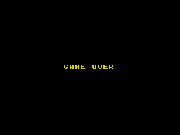
Room 1: its commands ROOM1, 4 bytes; black paper. Drawn only as the backdrop to GAME OVER, which the game prints over it (TITLE_SCREEN); shown here with it. Its commands are its colour and the end: it draws nothing, a blank screen for the words.
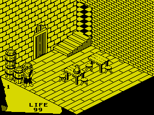
Room 2: its commands ROOM2, 66 bytes; yellow paper; floor at 50, ceiling at 170, x 50-178, y 50-174; 26 object records built.
Exits:
- back right (up x) to 50, at 178, 98, 150; walked: went through to room 50
- back left (up y) to 69, at 102, 82, 172; walked: went through to room 69
Doors in from: 50, 69.
Things:
 thing 28 (type 8): nothing when used; at 50, 72, 160
thing 28 (type 8): nothing when used; at 50, 72, 160- thing 29 (type 8): nothing when used; at 50, 72, 146
- thing 30 (type 8): nothing when used; at 64, 72, 146
- thing 31 (type 8): nothing when used; at 50, 94, 160
 thing 34 (type 3): nothing when used; at 130, 58, 110
thing 34 (type 3): nothing when used; at 130, 58, 110- thing 35 (type 3): nothing when used; at 90, 58, 114
- thing 36 (type 3): nothing when used; at 102, 58, 90
- thing 37 (type 3): nothing when used; at 142, 58, 90
 thing 38 (type 9): used: LIFE up 10; at 100, 78, 100
thing 38 (type 9): used: LIFE up 10; at 100, 78, 100
Creatures:
 the troll: chases, turning its frames to face its way (thing 110); at 50, 80, 130
the troll: chases, turning its frames to face its way (thing 110); at 50, 80, 130
And 7 objects that do nothing but stand in the way: 2 drawn (furniture and fittings) and 5 unseen (invisible blocks, the steps of stairs, a pit's floor).
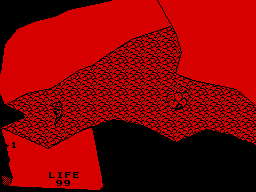
Room 3: its commands ROOM3, 83 bytes; red paper; floor at 50, ceiling at 170, x 50-188, y 74-194; 14 object records built.
Exits:
- back right (up x) to 6, at 188, 100, 150; walked: went through to room 6
- front right (down y) to 4, at 150, 150, 72; walked: went through to room 4
- front left (down x) to 74, at 48, 150, 136; walked: went through to room 74
Doors in from: 4, 6, 74.
Things: none.
Creatures:
 the ghost: wanders, takes things it meets (thing 111); at 80, 76, 150
the ghost: wanders, takes things it meets (thing 111); at 80, 76, 150
And 3 objects that do nothing but stand in the way: 1 drawn (furniture and fittings) and 2 unseen (invisible blocks, the steps of stairs, a pit's floor).
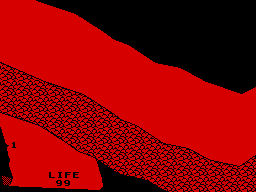
Room 4: its commands ROOM4, 53 bytes; red paper; floor at 50, ceiling at 170, x 70-118, y 50-184; 10 object records built.
Exits:
- front right (down y) to 5, at 70, 150, 50; walked: went through to room 5
- back left (up y) to 3, at 70, 150, 184; walked: went through to room 3
- back right (up x) to 13, at 118, 100, 126; needs thing 5; walked: stayed (LOCKED), and with the key: went through to room 13
Doors in from: 3, 5, 13.
Things: none.
Creatures: none.
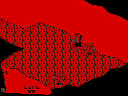
Room 5: its commands ROOM5, 86 bytes; red paper; floor at 50, ceiling at 170, x 54-170, y 56-224; 14 object records built.
Exits:
- back left (up y) to 4, at 100, 150, 222; walked: went through to room 4
Doors in from: 4.
Things: none.
Creatures:
- the troll: chases, turning its frames to face its way (thing 112); at 150, 80, 120
And 5 objects that do nothing but stand in the way: 2 drawn (furniture and fittings) and 3 unseen (invisible blocks, the steps of stairs, a pit's floor).
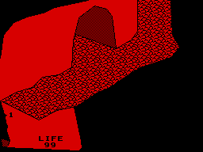
Room 6: its commands ROOM6, 74 bytes; red paper; floor at 50, ceiling at 170, x 50-230, y 130-174; 11 object records built.
Exits:
- front left (down x) to 3, at 50, 100, 130; walked: went through to room 3
- back left (up y) to 7, at 140, 150, 174; walked: went through to room 7
- back right (up x) to 8, at 230, 100, 146; walked: went through to room 8
Doors in from: 3, 7, 8.
Things: none.
Creatures: none.
And 1 object that do nothing but stand in the way: 1 unseen (invisible blocks, the steps of stairs, a pit's floor).
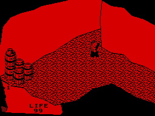
Room 7: its commands ROOM7, 65 bytes; red paper; floor at 50, ceiling at 170, x 50-178, y 50-174; 17 object records built.
Exits:
- back right (up x) to 8, at 176, 100, 146; walked: went through to room 8
- front right (down y) to 6, at 132, 150, 48; walked: went through to room 6
Doors in from: 6, 8.
Things:
- thing 39 (type 8): nothing when used; at 50, 72, 160
- thing 40 (type 8): nothing when used; at 50, 72, 146
- thing 41 (type 8): nothing when used; at 64, 72, 160
- thing 42 (type 8): nothing when used; at 64, 72, 146
- thing 43 (type 8): nothing when used; at 50, 94, 160
 thing 44 (type 17): a lure: the guards that rise from the floor go for it; at 50, 100, 162
thing 44 (type 17): a lure: the guards that rise from the floor go for it; at 50, 100, 162
Creatures:
- the troll: chases, turning its frames to face its way (thing 113); at 150, 80, 120
And 1 object that do nothing but stand in the way: 1 unseen (invisible blocks, the steps of stairs, a pit's floor).
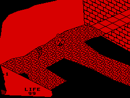
Room 8: its commands ROOM8, 140 bytes; red paper; floor at 50, ceiling at 170, x 50-178, y 50-174; 17 object records built.
Exits:
- back right (up x) to 9, at 176, 100, 146; walked: went through to room 9
- front left (down x) to 7, at 48, 100, 146; walked: went through to room 7
- front left (down x) to 6, at 48, 100, 80; walked: went through to room 6
- front right (down y) to 10, at 130, 100, 48; walked: went through to room 10
Doors in from: 6, 7, 9, 10.
Things: none.
Creatures:
- the ghost: wanders, takes things it meets (thing 114); at 100, 76, 150
And 5 objects that do nothing but stand in the way: 1 drawn (furniture and fittings) and 4 unseen (invisible blocks, the steps of stairs, a pit's floor).
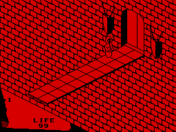
Room 9: its commands ROOM9, 14 bytes; red paper; floor at 10, ceiling at 170, x 50-178, y 50-174; 31 object records built. A pit: its floor kills.
Exits:
- back right (up x) to 18, at 176, 120, 96; walked: went through to room 18
- front left (down x) to 8, at 70, 120, 96; walked: went through to room 8
Doors in from: 8, 18.
Things: none.
Creatures:
 a wraith: chases (thing 115); at 150, 100, 120
a wraith: chases (thing 115); at 150, 100, 120
And 21 objects that do nothing but stand in the way: 20 drawn (furniture and fittings) and 1 unseen (invisible blocks, the steps of stairs, a pit's floor).
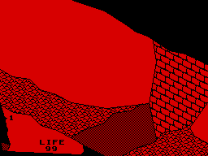
Room 10: its commands ROOM10, 79 bytes; red paper; floor at 50, ceiling at 110, x 50-112, y 50-174; 12 object records built. A pit: a hole in its floor ends the game.
Exits:
- down, a hole in the floor to room 0 (GAME OVER), at 50, 52, 44; walked: GAME OVER
- front right (down y) to 11, at 50, 150, 48; walked: went through to room 11
- back left (up y) to 8, at 50, 150, 174; walked: went through to room 8
Doors in from: 8, 11, 14.
Things: none.
Creatures: none.
And 2 objects that do nothing but stand in the way: 2 unseen (invisible blocks, the steps of stairs, a pit's floor).
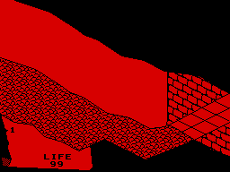
Room 11: its commands ROOM11, 120 bytes; red paper; floor at 50, ceiling at 110, x 50-112, y 50-174; 11 object records built.
Exits:
- back left (up y) to 10, at 50, 150, 174; walked: went through to room 10
- back right (up x) to 12, at 112, 100, 50; walked: went through to room 12
Doors in from: 10, 12.
Things: none.
Creatures: none.
And 2 objects that do nothing but stand in the way: 2 unseen (invisible blocks, the steps of stairs, a pit's floor).
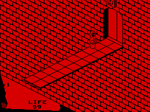
Room 12: its commands ROOM12, 6 bytes; red paper; floor at 10, ceiling at 170, x 50-178, y 50-174; 32 object records built. A pit: its floor kills.
Exits:
- back right (up x) to 15, at 176, 120, 96; walked: went through to room 15
- front left (down x) to 11, at 70, 120, 96; walked: went through to room 11
Doors in from: 11, 15.
Things: none.
Creatures:
- a wraith: chases (thing 116); at 150, 100, 120
And 22 objects that do nothing but stand in the way: 21 drawn (furniture and fittings) and 1 unseen (invisible blocks, the steps of stairs, a pit's floor).
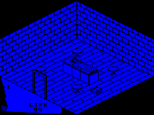
Room 13: its commands ROOM13, 26 bytes; blue paper; floor at 50, ceiling at 170, x 50-178, y 50-174; 25 object records built.
Exits:
- down, a hole in the floor to 14, at 110, 52, 90; walked: stayed; with what lay over it that can be moved taken away (things 45, 46): went through to room 14
- front left (down x) to 4, at 50, 82, 100; walked: went through to room 4
Doors in from: 4.
Things:
 thing 9 (type 4): nothing when used; at 100, 52, 68
thing 9 (type 4): nothing when used; at 100, 52, 68
Creatures: none.
And 15 objects that do nothing but stand in the way: 15 drawn (furniture and fittings).
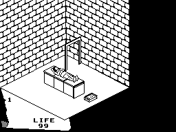
Room 14: its commands ROOM14, 13 bytes; white paper; floor at 50, ceiling at 170, x 50-144, y 84-174; 20 object records built. The book (the thing of kind 11) lies here.
Exits:
- front right (down y) to 10, at 120, 82, 154; walked: went through to room 10
Doors in from: 13.
Things:
 thing 7 (type 50): a key (the thing room 61 waits for); at 90, 54, 90
thing 7 (type 50): a key (the thing room 61 waits for); at 90, 54, 90
Creatures: none.
And 11 objects that do nothing but stand in the way: 11 drawn (furniture and fittings).
Room 15: its commands ROOM15, 20 bytes; yellow paper; floor at 50, ceiling at 170, x 50-232, y 104-174; 25 object records built.
Exits:
- back right (up x) to 19, at 230, 150, 94; walked: went through to room 19
- front left (down x) to 12, at 50, 100, 128; walked: went through to room 12
Doors in from: 12, 19.
Things: none.
Creatures:
- a guard that rises out of the floor, then chases (thing 117); at 170, 74, 120
 bounces about, hurting what it touches (placed by the room's drawing); at 110, 120, 160
bounces about, hurting what it touches (placed by the room's drawing); at 110, 120, 160- bounces about, hurting what it touches (placed by the room's drawing); at 170, 120, 160
- hangs and flickers (by its picture and its place, a torch's flame) (placed by the room's drawing); at 110, 100, 172
And 12 objects that do nothing but stand in the way: 12 drawn (furniture and fittings).
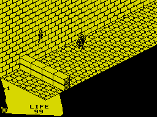
Room 16: its commands ROOM16, 8 bytes; yellow paper; floor at 50, ceiling at 170, x 50-232, y 104-174; 20 object records built.
Exits:
- back right (up x) to 17, at 230, 150, 94; walked: went through to room 17
- front left (down x) to 19, at 50, 150, 94; walked: went through to room 19
Doors in from: 17, 19.
Things: none.
Creatures:
 a guard: patrols along y, chases within 30 (thing 118); at 160, 74, 155
a guard: patrols along y, chases within 30 (thing 118); at 160, 74, 155- hangs and flickers (by its picture and its place, a torch's flame) (placed by the room's drawing); at 110, 100, 172
And 9 objects that do nothing but stand in the way: 9 drawn (furniture and fittings).
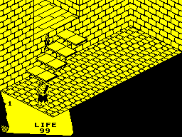
Room 17: its commands ROOM17, 43 bytes; yellow paper; floor at 50, ceiling at 170, x 50-232, y 104-174; 20 object records built.
Exits:
- back left (up y) to 78, at 100, 200, 174; walked: went through to room 78
- front left (down x) to 16, at 50, 150, 94; walked: went through to room 16
Doors in from: 16, 78.
Things: none.
Creatures:
- the troll: chases, turning its frames to face its way (thing 119); at 54, 80, 120
- hangs and flickers (by its picture and its place, a torch's flame) (placed by the room's drawing); at 110, 100, 172
And 9 objects that do nothing but stand in the way: 9 drawn (furniture and fittings).
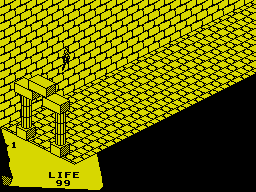
Room 18: its commands ROOM18, 8 bytes; yellow paper; floor at 50, ceiling at 170, x 50-232, y 104-174; 22 object records built.
Exits:
- front left (down x) to 9, at 50, 100, 128; walked: went through to room 9
- back right (up x) to 21, at 230, 150, 94; walked: went through to room 21
Doors in from: 9, 21.
Things: none.
Creatures:
- hangs and flickers (by its picture and its place, a torch's flame) (placed by the room's drawing); at 110, 100, 172
And 12 objects that do nothing but stand in the way: 12 drawn (furniture and fittings).
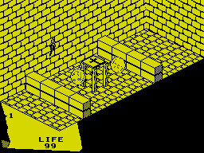
Room 19: its commands ROOM19, 34 bytes; yellow paper; floor at 50, ceiling at 170, x 50-232, y 104-174; 35 object records built. Two things of the room's own can be picked up, which spoils the door from room 25 to room 21 (the room 19 bug).
Exits:
- back right (up x) to 16, at 230, 150, 94; walked: went through to room 16
- front left (down x) to 15, at 50, 150, 94; walked: went through to room 15
Doors in from: 15, 16.
Things:
- thing 10 (type 21): used: freezes the room's creatures; at 122, 84, 128
Creatures:
- bounces about, hurting what it touches (placed by the room's drawing); at 100, 76, 130
- bounces about, hurting what it touches (placed by the room's drawing); at 140, 76, 120
- hangs and flickers (by its picture and its place, a torch's flame) (placed by the room's drawing); at 110, 100, 172
And 22 objects that do nothing but stand in the way: 22 drawn (furniture and fittings).
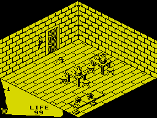
Room 20: its commands ROOM20, 21 bytes; yellow paper; floor at 50, ceiling at 170, x 50-178, y 50-174; 28 object records built.
Exits:
- back left (up y) to 21, at 120, 82, 172; walked: went through to room 21
Doors in from: 21.
Things:
 thing 1 (type 14): a key; at 50, 68, 50
thing 1 (type 14): a key; at 50, 68, 50- thing 11 (type 17): a lure: the guards that rise from the floor go for it; at 120, 58, 150
- thing 49 (type 28): nothing when used; at 70, 78, 50
- thing 52 (type 3): nothing when used; at 130, 58, 110
- thing 53 (type 3): nothing when used; at 90, 58, 114
- thing 54 (type 3): nothing when used; at 102, 58, 90
- thing 55 (type 3): nothing when used; at 142, 58, 90
- thing 56 (type 9): used: LIFE up 10; at 100, 78, 100
- thing 57 (type 9): used: LIFE up 10; at 140, 78, 100
 thing 58 (type 31): used: LIFE up 10; at 142, 72, 110
thing 58 (type 31): used: LIFE up 10; at 142, 72, 110
Creatures:
- a guard that rises out of the floor, then chases (thing 120); at 50, 94, 50
- hangs and flickers (by its picture and its place, a torch's flame) (thing 89); at 110, 90, 172
And 8 objects that do nothing but stand in the way: 8 drawn (furniture and fittings).
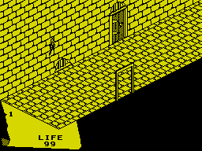
Room 21: its commands ROOM21, 6 bytes; yellow paper; floor at 50, ceiling at 170, x 50-232, y 104-174; 13 object records built.
Exits:
- front left (down x) to 18, at 50, 150, 94; walked: went through to room 18
- back left (up y) to 22, at 190, 82, 172; needs thing 1; walked: stayed (LOCKED), and with the key: went through to room 22
- front right (down y) to 20, at 120, 82, 102; walked: went through to room 20
- back right (up x) to 25, at 230, 150, 94; walked: went through to room 25
Doors in from: 18, 20, 22, 25.
Things: none.
Creatures:
- hangs and flickers (by its picture and its place, a torch's flame) (placed by the room's drawing); at 110, 100, 172
And 1 object that do nothing but stand in the way: 1 drawn (furniture and fittings).
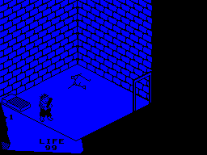
Room 22: its commands ROOM22, 67 bytes; blue paper; floor at 50, ceiling at 170, x 50-144, y 84-174; 10 object records built.
Exits:
- front right (down y) to 21, at 120, 82, 84; needs thing 1; walked: stayed (LOCKED), and with the key: went through to room 21
Doors in from: 21.
Things: none.
Creatures:
- the troll: chases, turning its frames to face its way (thing 121); at 50, 80, 120
And 1 object that do nothing but stand in the way: 1 drawn (furniture and fittings).
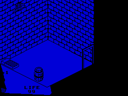
Room 23: its commands ROOM23, 8 bytes; blue paper; floor at 50, ceiling at 170, x 50-144, y 84-174; 10 object records built.
Exits:
- front right (down y) to 25, at 120, 82, 84; needs thing 1; walked: stayed (LOCKED), and with the key: went through to room 25
Doors in from: 25.
Things:
- thing 61 (type 8): nothing when used; at 50, 72, 100
Creatures: none.
And 1 object that do nothing but stand in the way: 1 drawn (furniture and fittings).
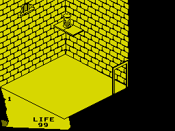
Room 24: its commands ROOM24, 13 bytes; yellow paper; floor at 50, ceiling at 170, x 50-144, y 84-174; 11 object records built.
Exits:
- front right (down y) to 26, at 120, 82, 84; needs thing 1; walked: stayed (LOCKED), and with the key: went through to room 26
Doors in from: 26.
Things:
 thing 12 (type 34): used: freezes the room's creatures; at 130, 118, 160
thing 12 (type 34): used: freezes the room's creatures; at 130, 118, 160
Creatures: none.
And 2 objects that do nothing but stand in the way: 2 drawn (furniture and fittings).
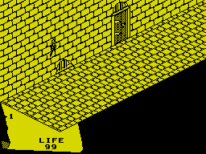
Room 25: its commands ROOM25, 6 bytes; yellow paper; floor at 50, ceiling at 170, x 50-232, y 104-174; 12 object records built.
Exits:
- back left (up y) to 23, at 190, 82, 172; needs thing 1; walked: stayed (LOCKED), and with the key: went through to room 23
- front left (down x) to 21, at 50, 150, 94; walked: went through to room 21
- back right (up x) to 26, at 230, 150, 94; walked: went through to room 26
Doors in from: 21, 23, 26.
Things: none.
Creatures:
- hangs and flickers (by its picture and its place, a torch's flame) (placed by the room's drawing); at 110, 100, 172
And 1 object that do nothing but stand in the way: 1 drawn (furniture and fittings).
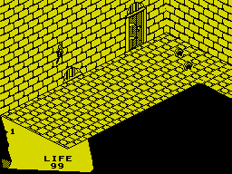
Room 26: its commands ROOM26, 22 bytes; yellow paper; floor at 50, ceiling at 170, x 50-232, y 104-174; 14 object records built.
Exits:
- back left (up y) to 24, at 190, 82, 172; needs thing 1; walked: stayed (LOCKED), and with the key: went through to room 24
- front left (down x) to 25, at 50, 150, 94; walked: went through to room 25
- front right (down y) to 27, at 196, 150, 102; walked: went through to room 27
Doors in from: 24, 25, 27.
Things:
- thing 59 (type 28): nothing when used; at 210, 62, 140
- thing 60 (type 28): nothing when used; at 200, 62, 120
Creatures:
- hangs and flickers (by its picture and its place, a torch's flame) (placed by the room's drawing); at 110, 100, 172
And 1 object that do nothing but stand in the way: 1 drawn (furniture and fittings).
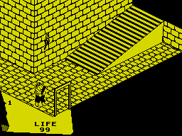
Room 27: its commands ROOM27, 183 bytes; yellow paper; floor at 50, ceiling at 170, x 50-232, y 104-174; 32 object records built.
Exits:
- back left (up y) to 26, at 50, 150, 174; walked: went through to room 26
- up, a hole in the ceiling to 34, at 180, 116, 140; walked: went through to room 34
- front right (down y) to 28, at 50, 82, 102; walked: went through to room 28
Doors in from: 26, 28, 34.
Things: none.
Creatures:
- the troll: chases, turning its frames to face its way (thing 122); at 50, 80, 120
- hangs and flickers (by its picture and its place, a torch's flame) (thing 91); at 110, 100, 172
And 20 objects that do nothing but stand in the way: 1 drawn (furniture and fittings) and 19 unseen (invisible blocks, the steps of stairs, a pit's floor).
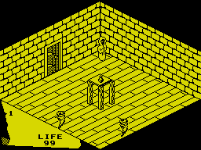
Room 28: its commands ROOM28, 21 bytes; yellow paper; floor at 50, ceiling at 170, x 50-178, y 50-174; 17 object records built.
Exits:
- back left (up y) to 27, at 100, 82, 172; walked: went through to room 27
Doors in from: 27.
Things:
- thing 13 (type 29): used: LIFE to 99; also destroys a wraith it falls on; at 100, 90, 100
Creatures:
- a wraith: chases (thing 123); at 162, 80, 160
- the ghost: wanders, takes things it meets (thing 124); at 80, 76, 50
- the ghost: wanders, takes things it meets (thing 125); at 50, 76, 100
And 5 objects that do nothing but stand in the way: 5 drawn (furniture and fittings).
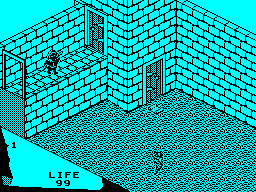
Room 29: its commands ROOM29, 151 bytes; cyan paper; floor at 50, ceiling at 170, x 50-178, y 50-174; 16 object records built. A new game starts here.
Exits:
- front right (down y) to 30, at 50, 150, 48; walked: went through to room 30
- front left (down x) to 34, at 50, 122, 152; walked: went through to room 34
- back right (up x) to 54, at 128, 122, 152; walked: went through to room 54
- back left (up y) to 53, at 140, 82, 124; walked: went through to room 53
Doors in from: 30, 34, 53, 54.
Things:
 thing 14 (type 32): used: carries the knight off to room 30; at 140, 54, 110
thing 14 (type 32): used: carries the knight off to room 30; at 140, 54, 110
Creatures:
- a guard: patrols along x, chases within 30 (thing 126); at 80, 120, 155
- the ghost: wanders, takes things it meets (thing 127); at 80, 76, 50
And 2 objects that do nothing but stand in the way: 2 unseen (invisible blocks, the steps of stairs, a pit's floor).
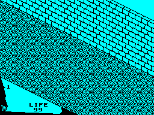
Room 30: its commands ROOM30, 6 bytes; cyan paper; floor at 50, ceiling at 170, x 50-178, y 50-174; 10 object records built. A thing of kind 9, used, carries the knight here.
Exits:
- front right (down y) to 31, at 50, 150, 48; walked: went through to room 31
- back left (up y) to 29, at 50, 150, 174; walked: went through to room 29
- front left (down x) to 32, at 48, 150, 50; walked: went through to room 32
Doors in from: 29, 31, 32.
Things: none.
Creatures: none.
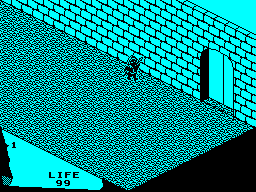
Room 31: its commands ROOM31, 19 bytes; cyan paper; floor at 50, ceiling at 170, x 50-178, y 50-174; 11 object records built. Its door to room 81 needs thing 8.
Exits:
- back left (up y) to 30, at 50, 150, 174; walked: went through to room 30
- front left (down x) to 33, at 48, 150, 50; walked: went through to room 33
- back right (up x) to 81, at 176, 100, 70; needs thing 8; walked: stayed (LOCKED), and with the key: went through to room 81
Doors in from: 30, 33.
Things: none.
Creatures:
- a guard: patrols along y, chases within 30 (thing 128); at 160, 74, 155
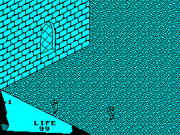
Room 32: its commands ROOM32, 31 bytes; cyan paper; floor at 50, ceiling at 170, x 50-178, y 50-174; 11 object records built.
Exits:
- front right (down y) to 33, at 50, 150, 48; walked: went through to room 33
- back right (up x) to 30, at 178, 150, 50; walked: went through to room 30
Doors in from: 30, 33.
Things: none.
Creatures:
- the ghost: wanders, takes things it meets (thing 129); at 80, 76, 50
- the ghost: wanders, takes things it meets (thing 130); at 50, 76, 100
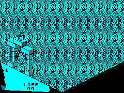
Room 33: its commands ROOM33, 26 bytes; cyan paper; floor at 50, ceiling at 170, x 50-178, y 50-174; 23 object records built. Thing 5, which the ending looks for, lies here.
Exits:
- front left (down x) to 37, at 50, 100, 128; walked: went through to room 37
- back left (up y) to 32, at 50, 150, 174; walked: went through to room 32
- back right (up x) to 31, at 178, 150, 50; walked: went through to room 31
Doors in from: 31, 32, 37.
Things:
- thing 5 (type 15): a key; at 50, 122, 134
Creatures:
- a guard: patrols along y, chases within 30 (thing 131); at 60, 74, 155
And 11 objects that do nothing but stand in the way: 11 drawn (furniture and fittings).
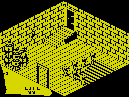
Room 34: its commands ROOM34, 56 bytes; yellow paper; floor at 50, ceiling at 170, x 50-178, y 50-174; 29 object records built.
Exits:
- back right (up x) to 29, at 176, 98, 152; walked: went through to room 29
- front left (down x) to 35, at 50, 82, 80; walked: went through to room 35
- down, a hole in the floor to 27, at 100, 52, 50; walked: went through to room 27
Doors in from: 27, 29, 35.
Things:
- thing 62 (type 8): nothing when used; at 50, 72, 160
- thing 63 (type 8): nothing when used; at 50, 72, 146
- thing 64 (type 8): nothing when used; at 64, 72, 160
- thing 65 (type 8): nothing when used; at 64, 72, 146
- thing 66 (type 8): nothing when used; at 50, 94, 160
Creatures:
- a guard that rises out of the floor, then chases (thing 132); at 70, 98, 150
- hangs and flickers (by its picture and its place, a torch's flame) (thing 93); at 110, 90, 172
And 12 objects that do nothing but stand in the way: 7 drawn (furniture and fittings) and 5 unseen (invisible blocks, the steps of stairs, a pit's floor).
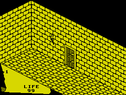
Room 35: its commands ROOM35, 33 bytes; yellow paper; floor at 50, ceiling at 110, x 50-112, y 50-174; 11 object records built.
Exits:
- back right (up x) to 34, at 110, 82, 86; walked: went through to room 34
- front right (down y) to 36, at 50, 150, 50; walked: went through to room 36
Doors in from: 34, 36.
Things: none.
Creatures:
- hangs and flickers (by its picture and its place, a torch's flame) (placed by the room's drawing); at 110, 100, 132
And 1 object that do nothing but stand in the way: 1 drawn (furniture and fittings).
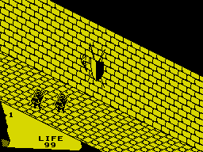
Room 36: its commands ROOM36, 20 bytes; yellow paper; floor at 50, ceiling at 110, x 50-112, y 50-174; 13 object records built.
Exits:
- back left (up y) to 35, at 50, 150, 172; walked: went through to room 35
- front right (down y) to 37, at 50, 150, 50; walked: went through to room 37
Doors in from: 35, 37.
Things: none.
Creatures:
- a guard: patrols along x, chases within 30 (thing 133); at 60, 74, 140
- a guard: patrols along x, chases within 30 (thing 134); at 70, 74, 120
- hangs and flickers (by its picture and its place, a torch's flame) (placed by the room's drawing); at 110, 100, 132
And 1 object that do nothing but stand in the way: 1 drawn (furniture and fittings).
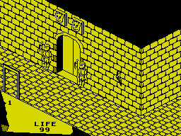
Room 37: its commands ROOM37, 107 bytes; yellow paper; floor at 50, ceiling at 110, x 50-112, y 50-174; 17 object records built.
Exits:
- back right (up x) to 33, at 112, 100, 130; walked: went through to room 33
- back left (up y) to 36, at 50, 150, 172; walked: went through to room 36
- front right (down y) to 38, at 50, 150, 50; walked: went through to room 38
- front left (down x) to 47, at 50, 82, 150; walked: went through to room 47
Doors in from: 33, 36, 38, 47.
Things: none.
Creatures:
- hangs and flickers (by its picture and its place, a torch's flame) (placed by the room's drawing); at 110, 100, 70
And 5 objects that do nothing but stand in the way: 5 drawn (furniture and fittings).
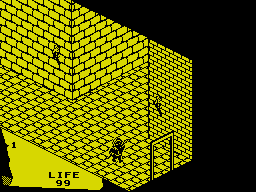
Room 38: its commands ROOM38, 67 bytes; yellow paper; floor at 50, ceiling at 110, x 50-112, y 50-174; 15 object records built.
Exits:
- back left (up y) to 37, at 50, 150, 174; walked: went through to room 37
- back right (up x) to 39, at 112, 150, 100; walked: went through to room 39
- front right (down y) to 62, at 70, 82, 48; walked: went through to room 62
Doors in from: 37, 39, 62.
Things: none.
Creatures:
- a guard: patrols along x, chases within 30 (thing 135); at 70, 74, 80
- hangs and flickers (by its picture and its place, a torch's flame) (placed by the room's drawing); at 110, 100, 80
- hangs and flickers (by its picture and its place, a torch's flame) (placed by the room's drawing); at 110, 100, 182
And 2 objects that do nothing but stand in the way: 2 drawn (furniture and fittings).
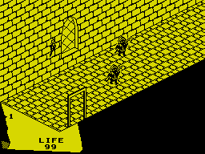
Room 39: its commands ROOM39, 10 bytes; yellow paper; floor at 50, ceiling at 170, x 50-232, y 104-174; 14 object records built.
Exits:
- front left (down x) to 38, at 50, 150, 100; walked: went through to room 38
- back right (up x) to 40, at 230, 150, 100; walked: went through to room 40
- front right (down y) to 42, at 60, 82, 104; needs thing 3; walked: stayed (LOCKED), and with the key: went through to room 42
Doors in from: 38, 40, 42.
Things: none.
Creatures:
- a guard: patrols along y, chases within 30 (thing 136); at 180, 74, 155
- a guard: patrols along y, chases within 30 (thing 137); at 140, 74, 125
- hangs and flickers (by its picture and its place, a torch's flame) (placed by the room's drawing); at 110, 100, 172
And 1 object that do nothing but stand in the way: 1 drawn (furniture and fittings).
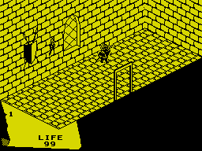
Room 40: its commands ROOM40, 16 bytes; yellow paper; floor at 50, ceiling at 170, x 50-232, y 104-174; 12 object records built.
Exits:
- front left (down x) to 39, at 50, 150, 100; walked: went through to room 39
- front right (down y) to 41, at 120, 82, 104; walked: went through to room 41
Doors in from: 39, 41.
Things: none.
Creatures:
- a guard: patrols along y, chases within 30 (thing 138); at 160, 74, 155
- hangs and flickers (by its picture and its place, a torch's flame) (placed by the room's drawing); at 110, 100, 172
And 1 object that do nothing but stand in the way: 1 drawn (furniture and fittings).
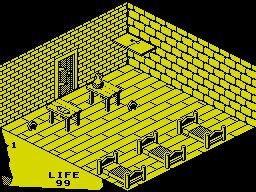
Room 41: its commands ROOM41, 28 bytes; yellow paper; floor at 50, ceiling at 170, x 50-178, y 50-174; 26 object records built.
Exits:
- back left (up y) to 40, at 100, 82, 170; walked: went through to room 40
Doors in from: 40.
Things:
- thing 3 (type 14): a key; at 170, 82, 160
- thing 68 (type 9): used: LIFE up 10; at 120, 78, 150
 thing 69 (type 30): used: LIFE up 10; at 80, 68, 140
thing 69 (type 30): used: LIFE up 10; at 80, 68, 140
Creatures:
- a guard that rises out of the floor, then chases (thing 139); at 60, 74, 155
- a guard that rises out of the floor, then chases (thing 140); at 130, 74, 125
And 13 objects that do nothing but stand in the way: 13 drawn (furniture and fittings).
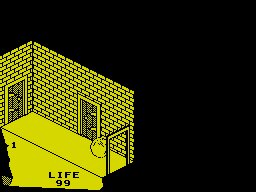
Room 42: its commands ROOM42, 28 bytes; yellow paper; floor at 50, ceiling at 110, x 50-80, y 76-174; 12 object records built.
Exits:
- back left (up y) to 39, at 52, 82, 172; needs thing 3; walked: stayed (LOCKED), and with the key: went through to room 39
- back right (up x) to 43, at 78, 82, 108; walked: went through to room 43
- front right (down y) to 45, at 54, 82, 76; needs thing 3; walked: stayed (LOCKED), and with the key: went through to room 45
Doors in from: 39, 43, 45.
Things: none.
Creatures:
- bounces about, hurting what it touches (placed by the room's drawing); at 50, 62, 110
- bounces about, hurting what it touches (placed by the room's drawing); at 64, 62, 92
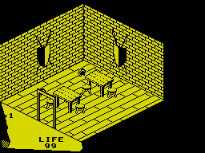
Room 43: its commands ROOM43, 57 bytes; yellow paper; floor at 50, ceiling at 170, x 50-154, y 78-174; 17 object records built.
Exits:
- front left (down x) to 42, at 50, 82, 108; walked: went through to room 42
- front right (down y) to 44, at 90, 82, 78; walked: went through to room 44
Doors in from: 42, 44.
Things:
- thing 73 (type 3): nothing when used; at 110, 58, 130
- thing 74 (type 3): nothing when used; at 70, 58, 134
- thing 75 (type 3): nothing when used; at 82, 58, 110
- thing 76 (type 3): nothing when used; at 122, 58, 110
Creatures:
- a guard that rises out of the floor, then chases (thing 141); at 80, 74, 155
- a guard that rises out of the floor, then chases (thing 142); at 130, 74, 155
And 2 objects that do nothing but stand in the way: 2 drawn (furniture and fittings).
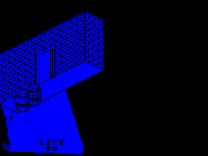
Room 44: its commands ROOM44, 6 bytes; blue paper; floor at 50, ceiling at 90, x 50-154, y 154-174; 11 object records built.
Exits:
- back left (up y) to 43, at 90, 82, 172; walked: went through to room 43
Doors in from: 43.
Things:
- thing 15 (type 29): used: LIFE to 99; also destroys a wraith it falls on; at 70, 58, 168
- thing 77 (type 8): nothing when used; at 50, 72, 150
- thing 78 (type 8): nothing when used; at 64, 72, 150
Creatures: none.
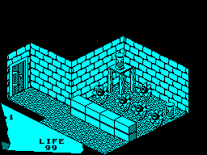
Room 45: its commands ROOM45, 102 bytes; cyan paper; floor at 50, ceiling at 170, x 50-152, y 50-178; 31 object records built.
Exits:
- front left (down x) to 46, at 54, 150, 50; walked: went through to room 46
- back left (up y) to 42, at 60, 82, 174; needs thing 3; walked: stayed (LOCKED), and with the key: went through to room 42
Doors in from: 42, 46.
Things:
- thing 16 (type 34): used: freezes the room's creatures; at 132, 66, 50
- thing 17 (type 34): used: freezes the room's creatures; at 130, 98, 110
Creatures:
 strikes at the knight within its reach (thing 101); at 140, 74, 90
strikes at the knight within its reach (thing 101); at 140, 74, 90- strikes at the knight within its reach (thing 102); at 110, 74, 114
- strikes at the knight within its reach (thing 103); at 114, 74, 90
- strikes at the knight within its reach (thing 104); at 114, 74, 70
- strikes at the knight within its reach (thing 105); at 114, 74, 50
And 15 objects that do nothing but stand in the way: 13 drawn (furniture and fittings) and 2 unseen (invisible blocks, the steps of stairs, a pit's floor).
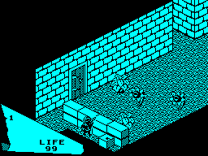
Room 46: its commands ROOM46, 81 bytes; cyan paper; floor at 50, ceiling at 170, x 50-176, y 50-134; 26 object records built.
Exits:
- back right (up x) to 45, at 174, 150, 50; walked: went through to room 45
- back left (up y) to 57, at 90, 82, 132; needs thing 6; walked: stayed (LOCKED), and with the key: went through to room 57
- front left (down x) to 52, at 58, 100, 106; walked: went through to room 52
Doors in from: 45, 52, 57.
Things:
- thing 6 (type 14): a key; at 60, 62, 50
Creatures:
- a guard: patrols along y, chases within 30 (thing 143); at 60, 74, 80
- strikes at the knight within its reach (thing 106); at 130, 74, 90
- strikes at the knight within its reach (thing 107); at 150, 74, 60
And 12 objects that do nothing but stand in the way: 11 drawn (furniture and fittings) and 1 unseen (invisible blocks, the steps of stairs, a pit's floor).
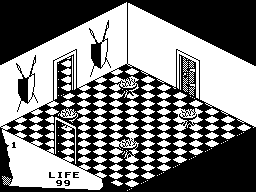
Room 47: its commands ROOM47, 39 bytes; white paper; floor at 50, ceiling at 170, x 50-178, y 50-174; 18 object records built.
Exits:
- back left (up y) to 48, at 100, 82, 172; walked: went through to room 48
- front left (down x) to 50, at 50, 82, 100; walked: went through to room 50
- back right (up x) to 37, at 174, 82, 100; walked: went through to room 37
Doors in from: 37, 48, 50.
Things: none.
Creatures:
 hangs and flickers (thing 110); at 78, 80, 78
hangs and flickers (thing 110); at 78, 80, 78- hangs and flickers (thing 111); at 78, 80, 138
- hangs and flickers (thing 112); at 138, 80, 78
- hangs and flickers (thing 113); at 138, 80, 138
And 4 objects that do nothing but stand in the way: 4 drawn (furniture and fittings).
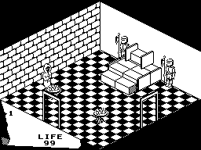
Room 48: its commands ROOM48, 80 bytes; white paper; floor at 50, ceiling at 170, x 50-178, y 50-174; 32 object records built.
Exits:
- front left (down x) to 49, at 50, 82, 100; walked: went through to room 49
- front right (down y) to 47, at 100, 82, 50; walked: went through to room 47
Doors in from: 47, 49.
Things:
- thing 18 (type 21): destroys a wraith it falls on or is pushed onto; at 148, 52, 104
Creatures:
- a wraith: chases (thing 144); at 92, 80, 160
- hangs and flickers (thing 114); at 78, 80, 78
- hangs and flickers (thing 115); at 78, 80, 138
And 19 objects that do nothing but stand in the way: 19 drawn (furniture and fittings).
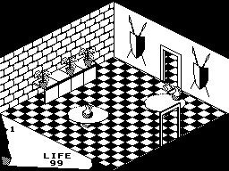
Room 49: its commands ROOM49, 31 bytes; white paper; floor at 50, ceiling at 170, x 50-178, y 50-174; 27 object records built.
Exits:
- front right (down y) to 50, at 100, 82, 50; walked: went through to room 50
- back right (up x) to 48, at 174, 82, 100; walked: went through to room 48
Doors in from: 48, 50.
Things:
 thing 19 (type 23): nothing when used; at 130, 84, 160
thing 19 (type 23): nothing when used; at 130, 84, 160- thing 20 (type 23): nothing when used; at 110, 84, 160
- thing 21 (type 23): nothing when used; at 80, 84, 160
- thing 80 (type 9): used: LIFE up 10; at 70, 84, 100
- thing 81 (type 9): used: LIFE up 10; at 140, 84, 70
- thing 82 (type 31): used: LIFE up 10; at 142, 82, 80
Creatures: none.
And 12 objects that do nothing but stand in the way: 12 drawn (furniture and fittings).
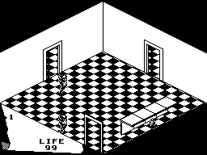
Room 50: its commands ROOM50, 27 bytes; white paper; floor at 50, ceiling at 170, x 50-178, y 50-174; 22 object records built.
Exits:
- back left (up y) to 49, at 100, 82, 172; walked: went through to room 49
- back right (up x) to 47, at 174, 82, 100; walked: went through to room 47
- front left (down x) to 2, at 50, 82, 50; walked: went through to room 2
- front right (down y) to 63, at 150, 82, 48; walked: went through to room 63
Doors in from: 2, 47, 49, 63.
Things:
- thing 22 (type 29): used: LIFE to 99; also destroys a wraith it falls on; at 110, 60, 50
Creatures:
- the ghost: wanders, takes things it meets (thing 145); at 100, 76, 150
- the ghost: wanders, takes things it meets (thing 147); at 50, 76, 100
And 8 objects that do nothing but stand in the way: 8 drawn (furniture and fittings).
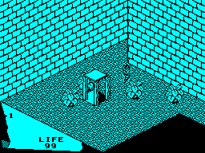
Room 51: its commands ROOM51, 64 bytes; cyan paper; floor at 50, ceiling at 170, x 50-178, y 50-174; 20 object records built.
Exits:
- down, a hole in the floor to 80, at 110, 52, 120; walked: went through to room 80
- front right (down y) to 52, at 150, 100, 48; walked: went through to room 52
- back right (up x) to 62, at 178, 100, 146; walked: went through to room 62
Doors in from: 52, 62, 80.
Things: none.
Creatures:
- the ghost: wanders, takes things it meets (thing 146); at 150, 76, 120
And 9 objects that do nothing but stand in the way: 9 drawn (furniture and fittings).
Room 52: its commands ROOM52, 44 bytes; cyan paper; floor at 50, ceiling at 170, x 50-80, y 114-174; 9 object records built.
Exits:
- back right (up x) to 46, at 80, 100, 114; walked: went through to room 46
- back left (up y) to 51, at 50, 100, 174; walked: went through to room 51
Doors in from: 46, 51.
Things: none.
Creatures: none.
Room 53: its commands ROOM53, 13 bytes; white paper; floor at 50, ceiling at 170, x 50-130, y 100-174; 24 object records built.
Exits:
- front right (down y) to 29, at 60, 82, 100; walked: went through to room 29
- front left (down x) to 54, at 90, 128, 156; walked: went through to room 54
- front left (down x) to 76, at 48, 82, 156; walked: went through to room 76
Doors in from: 29, 54, 76.
Things: none.
Creatures:
- bounces about, hurting what it touches (placed by the room's drawing); at 52, 62, 150
And 13 objects that do nothing but stand in the way: 13 unseen (invisible blocks, the steps of stairs, a pit's floor).
Room 54: its commands ROOM54, 8 bytes; white paper; floor at 50, ceiling at 170, x 50-130, y 100-174; 24 object records built.
Exits:
- back right (up x) to 53, at 88, 82, 158; walked: went through to room 53
- front left (down x) to 29, at 50, 82, 152; walked: went through to room 29
- front left (down x) to 55, at 90, 128, 156; walked: went through to room 55
Doors in from: 29, 53, 55.
Things: none.
Creatures:
- bounces about, hurting what it touches (placed by the room's drawing); at 110, 120, 160
And 13 objects that do nothing but stand in the way: 13 unseen (invisible blocks, the steps of stairs, a pit's floor).
Room 55: its commands ROOM55, 6 bytes; white paper; floor at 50, ceiling at 170, x 50-130, y 100-174; 23 object records built.
Exits:
- back right (up x) to 54, at 88, 82, 158; walked: went through to room 54
- up, a hole in the ceiling to 56, at 110, 150, 154; walked: went through to room 56
Doors in from: 54, 56.
Things:
- thing 83 (type 8): nothing when used; at 50, 72, 110
Creatures: none.
And 13 objects that do nothing but stand in the way: 13 unseen (invisible blocks, the steps of stairs, a pit's floor).
Room 56: its commands ROOM56, 21 bytes; white paper; floor at 50, ceiling at 170, x 50-144, y 84-174; 17 object records built.
Exits:
- down, a hole in the floor to 55, at 110, 52, 154; walked: went through to room 55
- front left (down x) to 68, at 90, 82, 110; walked: went through to room 68
Doors in from: 55, 68.
Things:
- thing 4 (type 14): a key; at 60, 72, 90
- thing 23 (type 34): used: freezes the room's creatures; at 66, 82, 88
Creatures:
- a wraith: chases (thing 148); at 62, 80, 160
And 5 objects that do nothing but stand in the way: 5 drawn (furniture and fittings).
Room 57: its commands ROOM57, 17 bytes; white paper; floor at 50, ceiling at 170, x 50-130, y 100-174; 28 object records built.
Exits:
- front left (down x) to 58, at 90, 128, 156; walked: went through to room 58
- front right (down y) to 46, at 80, 82, 100; needs thing 6; walked: stayed (LOCKED), and with the key: went through to room 46
- back left (up y) to 62, at 60, 82, 172; needs thing 6; walked: stayed (LOCKED), and with the key: went through to room 62
Doors in from: 46, 58, 62.
Things:
- thing 24 (type 21): destroys a wraith it falls on or is pushed onto; at 116, 94, 166
- thing 84 (type 8): nothing when used; at 50, 72, 130
- thing 85 (type 9): used: LIFE up 10; at 50, 86, 134
Creatures:
- a wraith: chases (thing 149); at 92, 124, 164
And 14 objects that do nothing but stand in the way: 1 drawn (furniture and fittings) and 13 unseen (invisible blocks, the steps of stairs, a pit's floor).

Room 58: its commands ROOM58, 6 bytes; white paper; floor at 50, ceiling at 170, x 50-130, y 100-174; 23 object records built.
Exits:
- front left (down x) to 59, at 90, 128, 158; walked: went through to room 59
- back right (up x) to 57, at 88, 82, 158; walked: went through to room 57
Doors in from: 57, 59.
Things: none.
Creatures:
- a wraith: chases (thing 150); at 92, 124, 164
And 13 objects that do nothing but stand in the way: 13 unseen (invisible blocks, the steps of stairs, a pit's floor).
Room 59: its commands ROOM59, 6 bytes; white paper; floor at 50, ceiling at 170, x 50-130, y 100-174; 23 object records built.
Exits:
- front left (down x) to 60, at 90, 128, 158; walked: went through to room 60
- back right (up x) to 58, at 88, 82, 158; walked: went through to room 58
Doors in from: 58, 60.
Things: none.
Creatures:
- a wraith: chases (thing 151); at 92, 124, 164
And 13 objects that do nothing but stand in the way: 13 unseen (invisible blocks, the steps of stairs, a pit's floor).
Room 60: its commands ROOM60, 6 bytes; white paper; floor at 50, ceiling at 170, x 50-130, y 100-174; 24 object records built.
Exits:
- up, a hole in the ceiling to 61, at 110, 150, 154; needs thing 7; walked: stayed (LOCKED), and with the key: went through to room 61
- back right (up x) to 59, at 88, 82, 158; walked: went through to room 59
Doors in from: 59, 61.
Things: none.
Creatures:
- a guard: patrols along y, chases within 30 (thing 152); at 50, 74, 125
- a guard: patrols along y, chases within 30 (thing 153); at 70, 74, 100
And 13 objects that do nothing but stand in the way: 13 unseen (invisible blocks, the steps of stairs, a pit's floor).
Room 61: its commands ROOM61, 47 bytes; white paper; floor at 50, ceiling at 170, x 50-178, y 50-174; 27 object records built. The book must be left here to get out.
Exits:
- down, a hole in the floor to 60, at 146, 52, 154; walked: stayed; with the book lying in the room: went through to room 60
Doors in from: 60.
Things:
- thing 8 (type 14): a key; at 60, 68, 50
- thing 88 (type 3): nothing when used; at 110, 58, 130
- thing 89 (type 3): nothing when used; at 70, 58, 134
Creatures:
- waits for the book, then a wraith (thing 154); at 92, 80, 164
And 15 objects that do nothing but stand in the way: 15 drawn (furniture and fittings).
Room 62: its commands ROOM62, 56 bytes; cyan paper; floor at 50, ceiling at 170, x 50-222, y 146-174; 12 object records built.
Exits:
- front left (down x) to 51, at 50, 100, 146; walked: went through to room 51
- front right (down y) to 57, at 70, 82, 146; needs thing 6; walked: stayed (LOCKED), and with the key: went through to room 57
- back left (up y) to 38, at 196, 82, 172; walked: went through to room 38
- front right (down y) to 77, at 196, 82, 146; needs thing 4; walked: stayed (LOCKED), and with the key: went through to room 77
Doors in from: 38, 51, 57, 77.
Things: none.
Creatures:
- bounces about, hurting what it touches (placed by the room's drawing); at 200, 110, 160
Room 63: its commands ROOM63, 12 bytes; yellow paper; floor at 50, ceiling at 90, x 50-154, y 154-174; 11 object records built.
Exits:
- front right (down y) to 65, at 70, 82, 154; needs thing 2; walked: stayed (LOCKED), and with the key: went through to room 65
- back left (up y) to 50, at 90, 82, 172; walked: went through to room 50
- back right (up x) to 64, at 154, 82, 158; walked: went through to room 64
- front left (down x) to 75, at 48, 82, 158; walked: went through to room 75
Doors in from: 50, 64, 65, 75.
Things: none.
Creatures: none.
Room 64: its commands ROOM64, 85 bytes; white paper; floor at 50, ceiling at 170, x 50-130, y 50-174; 30 object records built.
Exits:
- front left (down x) to 63, at 50, 82, 152; walked: went through to room 63
- back left (up y) to 73, at 90, 128, 172; walked: went through to room 73
Doors in from: 63, 73.
Things:
- thing 90 (type 8): nothing when used; at 100, 72, 70
- thing 91 (type 8): nothing when used; at 100, 72, 50
- thing 92 (type 8): nothing when used; at 114, 72, 70
- thing 93 (type 8): nothing when used; at 114, 72, 50
- thing 94 (type 8): nothing when used; at 100, 94, 70
Creatures:
- bounces about, hurting what it touches (placed by the room's drawing); at 110, 120, 160
- bounces about, hurting what it touches (placed by the room's drawing); at 52, 60, 130
- bounces about, hurting what it touches (placed by the room's drawing); at 92, 62, 110
And 13 objects that do nothing but stand in the way: 13 unseen (invisible blocks, the steps of stairs, a pit's floor).
Room 65: its commands ROOM65, 12 bytes; white paper; floor at 50, ceiling at 170, x 50-130, y 100-174; 23 object records built.
Exits:
- back left (up y) to 63, at 60, 82, 172; needs thing 2; walked: stayed (LOCKED), and with the key: went through to room 63
- front left (down x) to 66, at 90, 128, 156; walked: went through to room 66
Doors in from: 63, 66.
Things: none.
Creatures:
- bounces about, hurting what it touches (placed by the room's drawing); at 110, 120, 160
And 13 objects that do nothing but stand in the way: 13 unseen (invisible blocks, the steps of stairs, a pit's floor).
Room 66: its commands ROOM66, 6 bytes; white paper; floor at 50, ceiling at 170, x 50-130, y 100-174; 23 object records built.
Exits:
- back right (up x) to 65, at 88, 82, 158; walked: went through to room 65
- front left (down x) to 67, at 90, 128, 156; walked: went through to room 67
Doors in from: 65, 67.
Things: none.
Creatures:
- a guard: patrols along y, chases within 30 (thing 155); at 70, 74, 100
And 13 objects that do nothing but stand in the way: 13 unseen (invisible blocks, the steps of stairs, a pit's floor).
Room 67: its commands ROOM67, 6 bytes; white paper; floor at 50, ceiling at 170, x 50-130, y 100-174; 22 object records built.
Exits:
- back right (up x) to 66, at 88, 82, 158; walked: went through to room 66
- up, a hole in the ceiling to 68, at 110, 150, 154; walked: went through to room 68
Doors in from: 66, 68.
Things: none.
Creatures: none.
And 13 objects that do nothing but stand in the way: 13 unseen (invisible blocks, the steps of stairs, a pit's floor).
Room 68: its commands ROOM68, 6 bytes; white paper; floor at 50, ceiling at 170, x 50-144, y 84-174; 10 object records built.
Exits:
- down, a hole in the floor to 67, at 110, 52, 154; walked: went through to room 67
- front left (down x) to 56, at 90, 82, 110; walked: went through to room 56
Doors in from: 56, 67.
Things: none.
Creatures:
- a wraith: chases (thing 156); at 62, 80, 130
Room 69: its commands ROOM69, 82 bytes; white paper; floor at 50, ceiling at 170, x 50-144, y 84-174; 24 object records built.
Exits:
- front right (down y) to 2, at 120, 82, 84; walked: went through to room 2
Doors in from: 2.
Things:
- thing 95 (type 30): used: LIFE up 10; at 50, 68, 150
- thing 96 (type 30): used: LIFE up 10; at 50, 68, 130
Creatures: none.
And 14 objects that do nothing but stand in the way: 14 drawn (furniture and fittings).
Room 70: its commands ROOM70, 33 bytes; yellow paper; floor at 50, ceiling at 110, x 50-112, y 50-174; 12 object records built.
Exits:
- front left (down x) to 72, at 50, 82, 78; walked: went through to room 72
- front right (down y) to 73, at 50, 150, 50; walked: went through to room 73
Doors in from: 72, 73.
Things: none.
Creatures:
- hangs and flickers (by its picture and its place, a torch's flame) (placed by the room's drawing); at 110, 100, 132
And 2 objects that do nothing but stand in the way: 2 drawn (furniture and fittings).
Room 71: its commands ROOM71, 22 bytes; yellow paper; floor at 50, ceiling at 170, x 50-178, y 50-174; 37 object records built.
Exits:
- back right (up x) to 73, at 174, 82, 78; walked: went through to room 73
Doors in from: 73.
Things:
- thing 25 (type 4): nothing when used; at 100, 68, 54
- thing 26 (type 4): nothing when used; at 104, 70, 54
- thing 27 (type 4): nothing when used; at 102, 72, 58
- thing 99 (type 3): nothing when used; at 110, 58, 80
- thing 100 (type 3): nothing when used; at 50, 58, 84
- thing 101 (type 3): nothing when used; at 86, 58, 100
- thing 102 (type 3): nothing when used; at 136, 58, 100
Creatures:
- a guard that rises out of the floor, then chases (thing 157); at 150, 74, 125
And 21 objects that do nothing but stand in the way: 21 drawn (furniture and fittings).
Room 72: its commands ROOM72, 20 bytes; yellow paper; floor at 50, ceiling at 170, x 50-178, y 50-174; 32 object records built.
Exits:
- back right (up x) to 70, at 174, 82, 78; walked: went through to room 70
Doors in from: 70.
Things:
- thing 2 (type 14): a key; at 90, 60, 150
- thing 105 (type 3): nothing when used; at 110, 58, 100
- thing 106 (type 3): nothing when used; at 82, 58, 90
Creatures:
- a guard that rises out of the floor, then chases (thing 158); at 110, 74, 125
And 20 objects that do nothing but stand in the way: 20 drawn (furniture and fittings).
Room 73: its commands ROOM73, 34 bytes; yellow paper; floor at 50, ceiling at 110, x 50-112, y 50-174; 14 object records built.
Exits:
- back left (up y) to 70, at 50, 150, 172; walked: went through to room 70
- front left (down x) to 71, at 50, 82, 78; walked: went through to room 71
- front right (down y) to 64, at 80, 82, 50; walked: went through to room 64
Doors in from: 64, 70, 71.
Things: none.
Creatures:
- a guard: patrols along x, chases within 30 (thing 159); at 70, 74, 80
- hangs and flickers (by its picture and its place, a torch's flame) (placed by the room's drawing); at 110, 100, 132
And 2 objects that do nothing but stand in the way: 2 drawn (furniture and fittings).
Room 74: its commands ROOM74, 68 bytes; red paper; floor at 50, ceiling at 170, x 50-230, y 130-174; 8 object records built.
Exits:
- back right (up x) to 3, at 230, 150, 130; walked: went through to room 3
Doors in from: 3.
Things: none.
Creatures: none.
Room 75: its commands ROOM75, 19 bytes; blue paper; floor at 50, ceiling at 110, x 50-80, y 76-174; 13 object records built.
Exits:
- back right (up x) to 63, at 80, 82, 154; walked: went through to room 63
Doors in from: 63.
Things:
- thing 107 (type 17): a lure: the guards that rise from the floor go for it; at 50, 56, 100
- thing 108 (type 17): a lure: the guards that rise from the floor go for it; at 60, 56, 104
- thing 109 (type 17): a lure: the guards that rise from the floor go for it; at 54, 62, 100
Creatures: none.
And 2 objects that do nothing but stand in the way: 2 drawn (furniture and fittings).
Room 76: its commands ROOM76, 18 bytes; blue paper; floor at 50, ceiling at 90, x 50-154, y 154-174; 8 object records built.
Exits:
- back right (up x) to 53, at 154, 82, 154; walked: went through to room 53
Doors in from: 53.
Things: none.
Creatures: none.
Room 77: its commands ROOM77, 16 bytes; yellow paper; floor at 50, ceiling at 170, x 50-130, y 100-174; 23 object records built.
Exits:
- front right (down y) to 78, at 70, 82, 100; walked: went through to room 78
- back left (up y) to 62, at 100, 128, 172; needs thing 4; walked: stayed (LOCKED), and with the key: went through to room 62
Doors in from: 62, 78.
Things: none.
Creatures:
- a guard: patrols along x, chases within 30 (thing 160); at 70, 74, 110
And 13 objects that do nothing but stand in the way: 13 unseen (invisible blocks, the steps of stairs, a pit's floor).
Room 78: its commands ROOM78, 70 bytes; yellow paper; floor at 50, ceiling at 110, x 50-112, y 50-174; 12 object records built.
Exits:
- back left (up y) to 77, at 70, 82, 172; walked: went through to room 77
- front right (down y) to 17, at 50, 150, 50; walked: went through to room 17
Doors in from: 17, 77.
Things: none.
Creatures:
- a guard: patrols along x, chases within 30 (thing 161); at 60, 74, 140
- a guard: patrols along x, chases within 30 (thing 162); at 70, 74, 120
- a guard: patrols along x, chases within 30 (thing 163); at 90, 74, 80
Room 79: its commands ROOM79, 125 bytes; yellow paper. Drawn only as the title's picture, under the title page (TITLE_SCREEN); shown here with it.
Room 80: its commands ROOM80, 50 bytes; blue paper; floor at 50, ceiling at 220, x 50-80, y 150-174; 9 object records built.
Exits:
- up, a hole in the ceiling to 51, at 110, 200, 154; walked: went through to room 51
Doors in from: 51.
Things: none.
Creatures:
- bounces about, hurting what it touches (placed by the room's drawing); at 50, 60, 160
Room 81: its commands ROOM81, 4 bytes; black paper. Drawn only as the backdrop to the end of the quest (ROOMST); shown here with the verdict printed when thing 5 is carried in. Its commands are its colour and the end: it draws nothing, a blank screen for the words. The end of the quest.
Doors in from: 31.